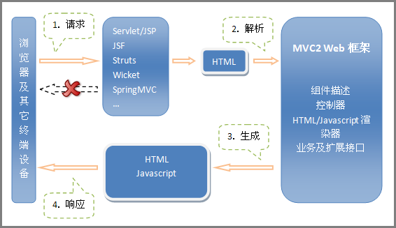
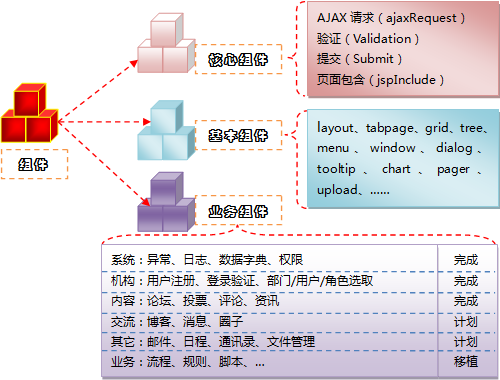

在其网站开放一个月之后，InfoQ有幸采访了SimpleFramework的开发团队（SD：SimpleFramework开发团队）：
InfoQ：目前市场上的Web框架有很多，譬如Struts、Spring等，为什么还要创建SimpleFramework呢，能够为InfoQ的读者简单介绍一下该框架的由来、发展及现状吗？
SD：Simpleframework起始并非一独立框架，而是对现有框架（如Struts）的业务性补充。最初，利用Filter 机制和XML格式的业务描述来实现请求的可配置扩展处理，将Struts等框架中的一些公共功能以组件（如AjaxRequest、Submit等）的形式提供，基于组件来实现UI和业务（逻辑）功能。随着这一套思路在很多大型企业级应用中使用，一套基于Filter“后处理”技术的、完整的MVC2和组件化的WEB应用开发模式也日渐成熟。它利用MVC2实现关注点分离，利用组件复用实现缩短周期、节约成本、提高质量等目的。 SimpleFrameworkV3.0 已经发布，它包含核心组件库、基本组件库、业务组件库和扩展组件库。
InfoQ：从其功能上看，它与Struts具有最多的相似点，请问SimpleFramework较之Struts的优势和劣势各是什么？
SD：与Struts2相较，SimpleFramework的优势和劣势简要如下：
优势：
组件体系：声明式组件定义；开放的组件体系，丰富的组件（库）劣势：
SimpleFramework没有Struts的成熟度及用户群。InfoQ：“后处理”是SimpleFramework的技术基础，请您解释一下何为“后处理”，Simpleframework在这个过程中都做了些什么？
SD：在介绍“后处理”之前，有必要先介绍一下过滤器。许多因素决定了过滤器的重要性：首先，它提供了将公用任务封装成可重用单元的能力；其次，过滤器可用于转换来自Servlet或JSP页面响应。 Web应用的基本任务是格式化数据后返回客户端。将过滤器作为Java Servlet规范的一部分，为开发人员提供了实现可重用跨容器转换组件的机会。过滤器可以实现多种不同类型的功能，诸如：基于用户身份的阻断式认证请求、Web应用的用户日志和审计、图像转换及地图缩放、减小下载体积的数据压缩、特定区域的请求-响应本地化实现、适应多类客户端之WEB应用的XML内容XSLT转换、标记化、触发资源访问事件、MIME类型链接、缓存处理等。这些仅是过滤器应用的很小部分而已，过滤器的应用还有更多。
而SimpleFramework用过滤器来做“后处理”——拦截HttpResponse并导向SimpleFramework作“二次处理”：分派请求逻辑；依据“组件声明”生成或渲染组件、生成代码、处理业务规则、重构响应内容等；其并结合其封装可重用单元和转换页面响应的能力来实现组件处理机制，构建可重用的组件。据此，SimpleFramework已具有完整的MVC2特征。
其工作机制如下图所示：

http://www.infoq.com/resource/articles/web-simpleframework/zh/resources/image.png
InfoQ：SimpleFramework的另一重要特点是“组件”的概念，组件能够大大减少程序员的开发工作量。在SimpleFramework中，组件能做什么，V3中已提供的组件有哪些？
SD：SimpleFramework提供了大量可重用组件，并以一定的接口/API方式暴露给用户，供应用层调用。
核心组件：提供业务无关的功能性处理组件，如AJAX请求、表单提交、页面包含、验证等。其组成如下图所示：

http://www.infoq.com/resource/articles/web-simpleframework/zh/resources/image2.png
InfoQ：在您提到的核心组件中包含AJAX组件。它能够自动生成AJAX客户端代码，自动加载到浏览器并在浏览器中执行。那么，当框架提供的AJAX组件不能满足用户所有的AJAX需求时，V3提供何种扩展机制供用户来扩展组件的功能？
SD：普通AJAX从技术上讲就是AjaxRequest完成基于Ajax的请求及响应过程，通过XMLHttpRequest对象可以很容易实现其基本功能，但AJAX组件通过封装AjaxRequest可以做更多的事情，在Simpleframework中AJAX组件有以下特点：
不需要或少量的js代码，可能在回调函数中配置。Simpleframework提供组件扩展机制：其一，每一种组件都提供了相应的业务接口，用户可以继承并覆盖相应的方法来实现自己的业务需求；其二，如果现有的组件和当前的业务需求确实存在巨大的差异，可以按着组件规范定义一个新的组件，并注册到Simple系统中来。
一般而言，这两种扩展机制已能满足绝大多数的用户扩展需求，另外SimpleFramework是开源产品，用户还可以在遵循协议的前提下基于源码扩展新的组件实现机制。
InfoQ：据我所知，SSH（Struts+Spring+Hiberate）是目前应用极为广泛的一套框架组合，而且很多程序在这方面都有很深的积累，那么SimpleFramework能够与之兼容吗？如果一起使用，您建议二者如何配合使用，即推荐使用SSH中的哪些功能、 SimpleFramework的哪些功能？
SD： SimpleFramework完全可以和SSH兼容使用，因为SimpleFramework的基于过滤器的“后处理”机制决定了这一点，完全可以将SimpleFramework看做SSH或Struts的一个“过滤器”来应用。
SimpleFramework与SSH配合使用时，建议如下：
| SSH |
SimpleFramework |
| Spring：Bean Manager、IoC Hibernate：ORM Struts2： FormBean、Action |
1） 配置为Struts的过滤器。 2） 可以使用Simpleframework的核心组件、基本组件和业务组件。 3） 可用Hibernate替代SimpleFramework的DAO层。 4） Struts的Action继承SimpleFramework的相关抽象类或实现SimpleFramework的接口作为SimpleFramework的业务类（Handle Class）。 |
InfoQ：SimpleFramework已有哪些成功案例，它最适合于构建哪一类应用系统？
SD：在电力和远洋系统的办公自动化、电信的无线网络优化系统中经过大数据量和大并发用户的实战考验。官方网站即基于SimpleFramework组件搭建，目前已经提供：文件存储、个性页面、新闻资讯、社区交流等应用。
以SimpleFramework的内容组件为基础，可作为构建互联网社区应用的支撑框架。以SimpleFramework的基本和业务组件为支撑，可作为构建企业应用的Web框架。
InfoQ：目前有没有该产品的路线图，近期会对V3做哪些方面的增强，能否跟我们的读者先透露一下？
SD: SimpleFramework下一步的RoadMap规划如下：
文档补充：对现有SimpleFramework文档做进一步的补充和完善欲了解更多信息，请访问SimpleFramework网站。
时至今日，SimpleFramework的核心团队成员有四人，以下是他们的介绍：
陈侃，是simpleframework.net 的首席架构师和共同创始人。在2001年秋季全面转向对Java，并对Java情有独钟，发起了simpleframework开源项目，并参与了许多前沿技术的开发（如 工作流、AOP、脚本语言和Web等），技术之外，还有一手飞车绝技，酷爱打羽毛球。
赵贵根，系统过程博士，团队的精神领袖。为团队把控工作重点、难点和方向，曾参与过大型的HIS系统、电子病历、零售企业POS系统、中小企业ERP系统、华北电力和国家知识产权局OA系统、国家电网电能采集系统、联通资源管理系统的分析设计和建设过程。目前正从事 SimpleFramework的开源项目并致力于SimpleFramework技术与思想的推广。
陈圩贤，中科院硕士，多年从事安全领域的研究和技术工作。目前致力于simple的宣传和推广工作。爱好打球、登山、游泳。
刘彬，目前从事企业信息化方面的研发及架构工作，有Java大型开发项目经验，兴趣的技术领域是SOA、Workflow、J2EE编程，Simpleframework的开源项目建设，并致力于Simpleframework问题的解决和技术推广。